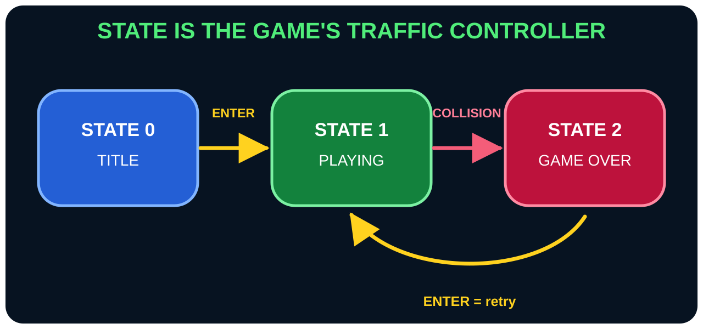
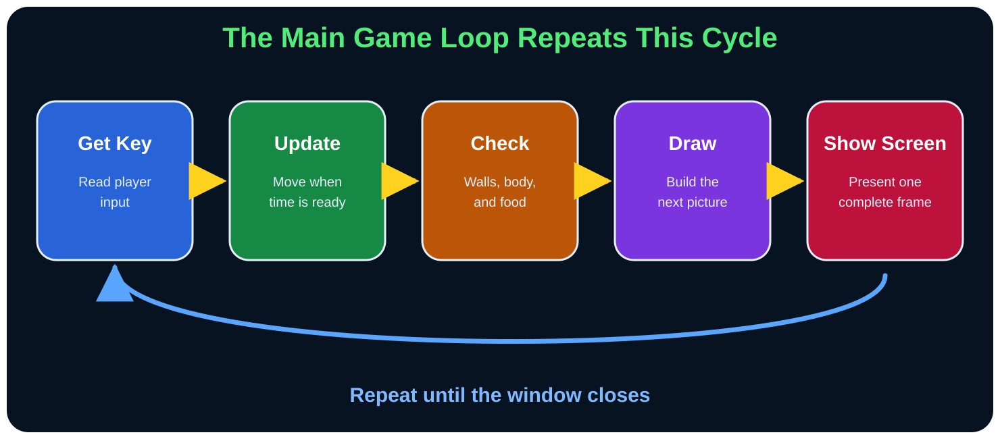

Paste checkpoint 9
Connect Everything in the Main Loop
The helpers are ready. Now open the window, choose behavior by State, present every frame, and close cleanly.
Prepare the state helpers
Use small names that make the main loop read like a story.
Sub EnterTitle()
State = 0
Key = KEY_NONE
Stop Sound
End Sub
Sub ResetGame()
Call ResetPlay()
End Sub
Open the game window
Sub definitions are recipes; this is where the actual program begins.
Game Window "SMILE 2.0 Snake"
Call EnterTitle()Handle the title state
Read one key event, allow Enter or Escape, and draw the title.
Do
Get Key Key
If State = 0 Then
If Key = KEY_ESCAPE Then
End Program
Else If Key = KEY_ENTER Then
Call ResetGame()
End If
Call DrawTitle()Handle the playing state
Accept safe turns, move only when time is ready, then draw.
Else If State = 1 Then
If Key = KEY_ESCAPE Then
End Program
End If
If (Key = KEY_W Or Key = KEY_UP) And Direction <> KEY_DOWN Then
NextDirection = KEY_UP
Else If (Key = KEY_S Or Key = KEY_DOWN) And Direction <> KEY_UP Then
NextDirection = KEY_DOWN
Else If (Key = KEY_A Or Key = KEY_LEFT) And Direction <> KEY_RIGHT Then
NextDirection = KEY_LEFT
Else If (Key = KEY_D Or Key = KEY_RIGHT) And Direction <> KEY_LEFT Then
NextDirection = KEY_RIGHT
End If
If State = 1 And Timer() >= NextMoveTime Then
Call MoveSnake()
End If
Call DrawBoard()
If State = 2 Then
Call DrawGameOver()
End IfPrevent an instant 180-degree turn
The first direction condition reads: If W or Up was pressed, and the snake is not currently moving Down, request Up. The other three branches use the same safety rule.
Finish game over, present frames, and clean up
This final block closes the state If and the outer loop.
Else
If Key = KEY_ESCAPE Then
End Program
Else If Key = KEY_ENTER Then
Call ResetGame()
End If
If State = 0 Then
Call DrawTitle()
Else
Call DrawBoard()
Call DrawGameOver()
End If
End If
Show Screen
Loop Until Game_Closed() = True
Stop Sound
End Program
Build checkpoint: your game is ready
- Save
Program-NoDemo.smile. - Build the solution.
- Press F5 or Ctrl+F5.
- Confirm the title, play, food, score, speed, collision, retry, sound, high score, Escape, and Alt+Enter.
Repetition builds memory
Reinforce what you learned
Say it again
The main loop repeatedly reads input, chooses a state branch, updates on schedule, draws, and calls Show Screen.
Recall it
Why is Show Screen near the bottom of the loop?
Check your answer
So the player sees one complete frame after all drawing for that pass is finished.